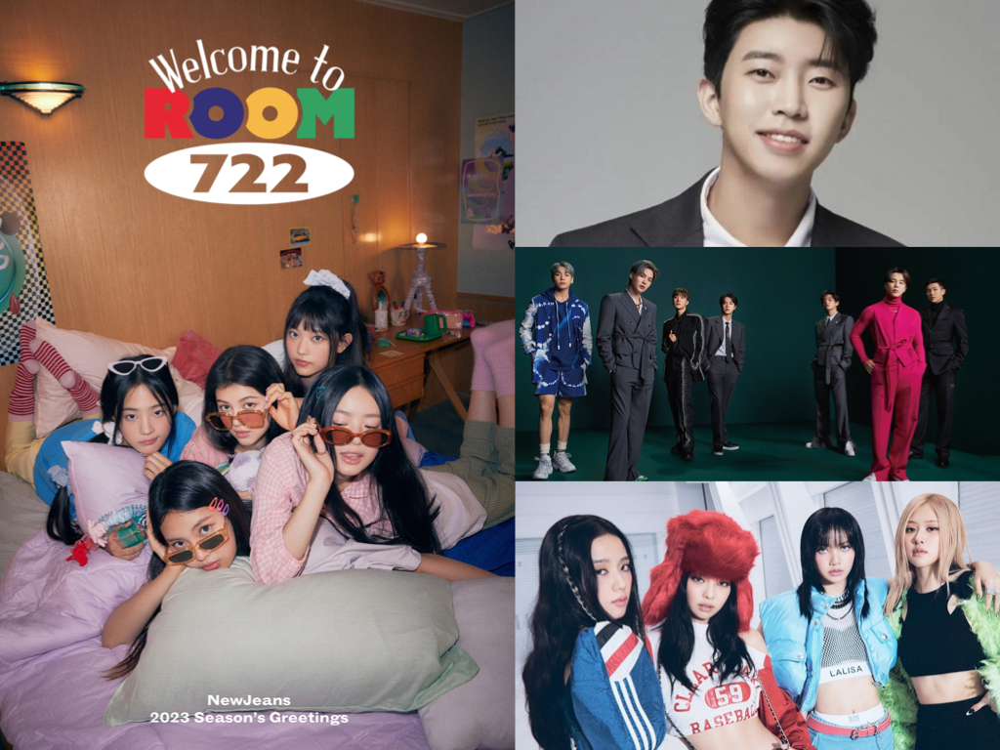
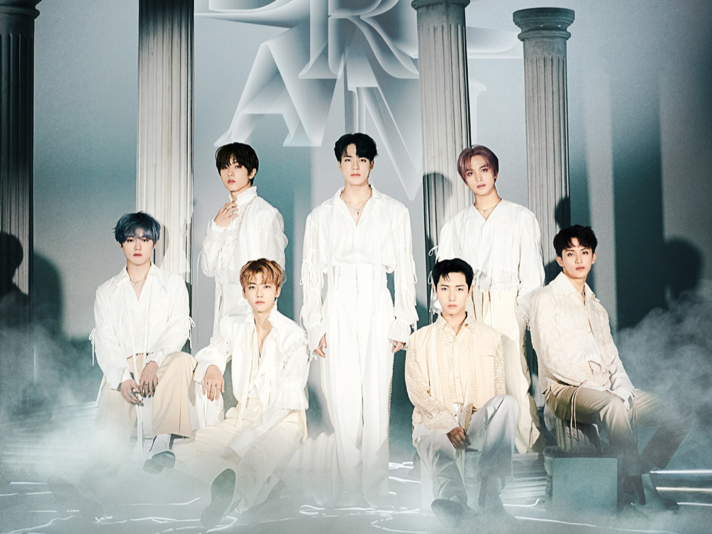
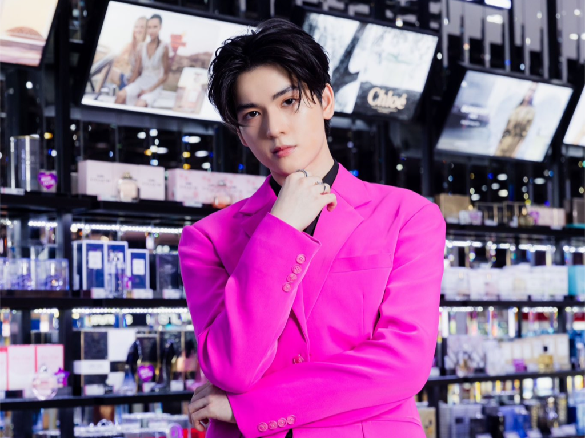
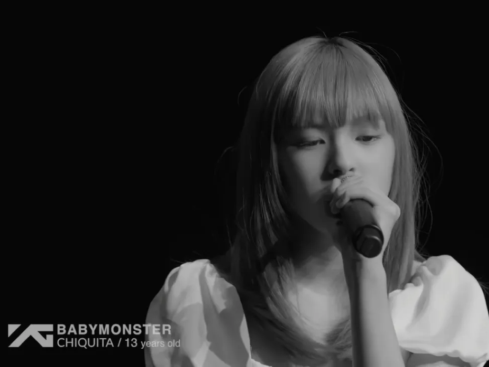

-

TOP 100 ‘นักร้องเกาหลี’ ที่ถูกพูดถึงมากที่สุด ประจำเดือนมกราคม 2023
วันเสาร์ 21 มกราคม 2566การจัดอันดับข้อมูลจาก Big Data ของ The Korean Business Research Institute ที่ดำเนินมาอย่างต่อเนื่องรวมถึงในปี 2023 นี้ และล่าสุดกับการจัดอันดับในหมวด นักร้องเกาหลี ได้ถูกประกาศออกมาแล้วในวันที่ 21 มกราคม โดยการจัดอันดับหมวด นักร้องเกาหลี ได้ตัดสินผ่านข้อมูลหลายส่วนด้วยกัน ทั้งการวิเคราะห์จากการรายงานของสื่อ, การมีส่วนร่วมของผู้บริโภค, การมีปฏิกิริยาร่วม และดัชนีการรับรู้ของสังคม ...
-

‘NCT DREAM’ เตรียมจัดคอนเสิร์ต ‘THE DREAM SHOW2’ ในไทย 10-12 มี.ค.นี้
วันเสาร์ 21 มกราคม 2566ในที่สุดการรอคอยกว่า 3 ปี 3 เดือนของ NCTzen DREAM ก็ใกล้จะสิ้นสุดลง! เตรียมพบกับช่วงเวลาแสนสุข ผ่านโชว์อันน่าตื่นตาตื่นใจ และบทเพลงอันมีสีสันหลากหลายแนว กับสเกลคอนเสิร์ตที่อัปเกรดให้ยิ่งใหญ่ขึ้นอย่างอิมแพ็ค อารีน่า ถึง 3 รอบการแสดง พร้อมโปรดักชันสุดอลังการ ซึ่งจะทำให้ทุกคนได้สัมผัสคอนเสิร์ตที่เป็นเหมือนกับความฝันเหนือจินตนาการ ...
-
aespa ประกาศจัดคอนเสิร์ตเดี่ยวครั้งแรก ‘2023 aespa 1st Concert ‘SYNK : HYPER LINE’’ ที่กรุงโซล ในวันที่ 25-26 กุมภาพันธ์นี้!
วันเสาร์ 21 มกราคม 2566‘2023 aespa 1st Concert ‘SYNK : HYPER LINE’’ จะจัดขึ้นเป็นเวลาสองวัน ในวันที่ 25-26 กุมภาพันธ์ 2023 ณ Jamsil Arena กรุงโซล ประเทศเกาหลีใต้ โดยคาดว่า คอนเสิร์ตแห่งจินตนาการที่ผสมผสานบทเพลงอันทรงพลังและการแสดงอันเป็นเอกลักษณ์ของ aespa จะสะกดใจผู้ชมได้เป็นอย่างดี ...
-

Trainee A ยุบโปรเจกต์ ยอร์ช ยงศิลป์ โพสต์ไอจีสตอรี่ขอบคุณพร้อมเดินทางกลับไทย
วันศุกร์ 20 มกราคม 2566หลังจากที่ ยอร์ช ยงศิลป์ วงศ์พนิตนนท์ ได้ไปร่วมเป็นเด็กฝึกให้กับ Trainee A ของค่าย BIGHIT MUSIC ที่ประเทศเกาหลี สร้างความตื่นเต้นให้กับแฟนๆ K-POP ชาวไทย อย่างมาก ซึ่งทุกคนต่างก็พร้อมสนับสนุน ยอร์ช กันเต็มที่ แต่ล่าสุดมีเรื่องสุดช็อกเกิดขึ้น เมื่อ ยอร์ช ได้โพสต์ไอจีสตอรี่เพื่อแจ้งข่าวกับแฟนๆ ว่า โปรเจกต์ Trainee A ได้ยุติลงแล้ว พร้อมขอบคุณทุกคนสำหรับการสนับสนุน และเดินทางกลับเมืองไทย ...
-

‘ยุนอา SNSD – อีจุนโฮ 2PM’ เผยภาพลักษณ์ใหม่ที่น่าหลงไหล ในซีรีส์ King The Land ซีรีส์ใหม่จาก JTBC ที่น่าปักหมุด
วันศุกร์ 20 มกราคม 2566ซีรีส์เรื่องใหม่ที่น่าติดตามในปี 2023 นี้ แน่นอนว่าจะต้องมีชื่อซีรีส์ King the Land อยู่ในลิสต์ของใครหลายคนอย่างแน่นอน เพราะโปรเจกต์ซีรีส์ใหม่เรื่องนี้ ได้รับความสนใจตั้งแต่มีการคอนเฟิร์มนักแสดงนำในซีรีส์แล้วว่าจะได้ 2 ไอดอลนักแสดงชื่อดัง อีจุนโฮ 2PM และ อิมยุนอา SNSD มารับบทนำร่วมกัน ซึ่ง JTBC ก็ไม่รอช้าที่จะปล่อยภาพเผยลุคใหม่ที่น่าหลงไหลของ 2 นักแสดงให้เราได้ชมกัน ระหว่างนับถอยหลังรอวันออนแอร์ ...
-

YG เปิดตัวสาวน้อยจากประเทศไทยวัย 13 ปี ‘Chiquita’ สมาชิกคนที่ 3 ของวง BABY MONSTER
วันศุกร์ 20 มกราคม 2566BABY MONSTER เกิร์ลกรุ๊ปน้องใหม่จากค่าย YG Entertainment ที่กำลังได้รับความสนใจจากหลายฝ่ายอย่างล้นหลาม เพราะนี่คือวงเกิร์ลกรุ๊ปวงใหม่ของ YG ในรอบ 6 ปี หลังการเดบิวต์ของ BLACKPINK ซึ่งตั้งแต่มีการปล่อยคลิปเปิดตัวแง้มโฉมหน้า 7 สมาชิกของวง YG ก็ได้มีการทยอยปล่อยคลิปเปิดตัวสมาชิกออกมาทีละคน จนในที่สุดก็ถึงคิวสาวน้อยจากประเทศไทย ‘ชิกิต้า’ (Chiquita) หรือ ‘แคนนี่’ วัย 13 ปี ...